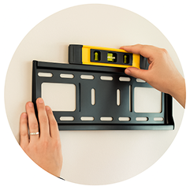

You can pay online with a credit card or choose to pay after installation using cash or a credit card. Enjoy flexible payment options for a hassle-free experience tailored to your convenience.
How to Wall Mount a TV (DIY) - Custom Step-by-Step Guide
Just answer a few question about your TV and wall - and get personalized instruction in seconds
-
Preparation & tools
-
Wall Inspection
-
TV Bracket
-
Measurements
-
Mount installation
-
Final adjustment
-
Done!
What’s your TV size?
Choose the diagonal size of your TV screen. This helps us calculate the ideal mounting height and recommend compatible wall mounts.
TV size: 65 in
- 32’
- 100’
Do it yourself
You can mount any TV on any type of wall
Drywall
The most common wall type. Find the studs or use anchors, and you’ll be done in 1–2 hours.
Above a fireplace
Just make sure the heat won’t damage the TV. It takes a bit more time, but it’s totally doable.
No studs
Use heavy-duty toggle bolts or spread the load with a mounting plate. It’s manageable with the right tools.
Concrete
You’ll need a hammer drill and concrete anchors. The result is solid and reliable.
Tile
Nothing tricky. Just use a tile drill bit to avoid cracks.
Wood
One of the easiest options. Just screw directly into the wood — fast and secure.
Watch our video tutorial how to mount a TV on any wall
Your TV Wall Mounting Plan
A TV can be as heavy and very fragile. Depending on the size of your TV and where you’re hanging it, get enough help to do this step safely. Make sure you follow your TV’s specific manufacturer’s instructions for mounting to the wall.
Step 1: Preparation
Before you start mounting your TV, it’s important to properly inspect the wall and prepare all necessary tools and materials. A few extra minutes of planning will save you time and trouble later on.
Identify the Wall Type and Structure
Understanding what kind of wall you’re working with is key. This will help you choose the right fasteners, tools, and techniques.
Here’s how to check:- Tap the wall with your knuckles – A hollow sound usually means drywall or plaster. A solid sound may indicate brick, concrete, or wood.
- Look at nearby features – Baseboards, exposed beams, or outlets may reveal what’s behind the surface.
- Use a stud finder – Helpful to detect wooden or metal studs behind drywall.
- Consider what’s above the wall – If it’s a fireplace or tiled area, this affects your drilling method and anchor type.
Gather the Necessary Tools
Having the right tools ready before you begin makes the process smoother and safer.
Basic tools you’ll likely need:- Power drill (preferably with hammer function for masonry walls)
- Drill bits for different surfaces (masonry, tile, wood, metal)
- Stud finder
- Level
- Measuring tape
- Pencil or marker for marking holes
- Screwdriver or driver bit
- Safety gear (gloves, safety glasses)
Step 2: Wall inspection
Once you’ve identified the surface type and gathered your tools, it’s time to inspect what’s behind the wall. This step is critical for safety, avoiding damage, and choosing the right mount for your setup.
Check for Pipes and Cables
You should never drill into a wall without knowing what’s behind it.
How to do it:- Use a stud finder with wire/pipeline detection – Many modern stud finders can also detect live wires and pipes.
- Look for clues nearby – If there’s a bathroom or kitchen behind the wall, assume plumbing might be present.
- Avoid drilling directly above or below outlets and switches – These are common paths for electrical wires.
Locate the Studs
Knowing the exact position of studs helps you plan where to drill and which mount type will work best.
Why this matters:- Most basic mounts require a stud for support.
- If a stud is centered where you want the TV, that’s great — but if it’s off-center, you may not be able to center the TV properly with a fixed mount.
- Articulating and sliding mounts allow more flexibility in positioning the TV, even when the studs aren’t ideally placed.
Step 3: TV Bracket
Selecting the right TV mount isn’t just about personal preference — it depends on your wall type, room layout, TV size, and desired height.
Try our Mount Compatibility Calculator to find the perfect option based on your:
- TV size and model
- Wall type
- Avoid drilling directly above or below outlets and switches – These are common paths for electrical wires.
- Preferred viewing height and angle
- Installation room
- 👉 Launch the Calculator
Locate the Studs
Knowing the exact position of studs helps you plan where to drill and which mount type will work best.
Why this matters:- Most basic mounts require a stud for support.
- If a stud is centered where you want the TV, that’s great — but if it’s off-center, you may not be able to center the TV properly with a fixed mount.
- Articulating and sliding mounts allow more flexibility in positioning the TV, even when the studs aren’t ideally placed.
Step 4: Measurements
💡 Why this matters: This measurement tells you where the bottom of the TV will land once mounted, helping you plan its vertical position on the wall accurately.
Before doing anything on the wall, partially assemble the mounting system:
-
1Attach the vertical bracket arms to the back of your TV using the provided screws.
-
2Then, temporarily attach those arms to the wall plate (the full mount) — this gives you a complete picture of the bracket’s final shape and alignment.
-
3Measure the vertical distance between the bottom edge of your TV and the bottom mounting holes (or mounting bar) that will attach to the wall.
Mark the Lower Anchor Points
-
1Find the horizontal center between your studs (use your stud finder again to confirm).
-
2Based on the earlier measurement, mark a light horizontal line on the wall where the bottom of the bracket will go — this corresponds to where you want the bottom of your TV to sit.
-
3Mark the lower mounting holes (usually two or more) on that line.
Use the Bracket Template
✅ If your bracket didn’t include a template, hold the metal plate itself against the wall, double-check it’s level, and trace around the mounting holes.
-
1Align the template’s lower edge with the marks you just made.
-
2Make sure it’s level.
-
3Mark the top hole positions according to the template.
Step 5: TV Mount Installation
Drill the Pilot Holes
Use the correct drill bit for your wall type — whether it's wood, concrete, tile, or drywall with anchors. Drill steadily and keep the angle straight for accurate mounting.
Install the Mount with Top Screws Only
Attach the wall bracket using only the top screws for now. Leave them slightly loose so you can adjust the level in the next step.

Level and Fully Secure the Bracket
Use a level to adjust the mount perfectly straight. Once aligned, tighten the top screws fully and install the remaining screws to lock everything in place.
Hang the TV onto the Bracket
Carefully lift the TV and hook it onto the bracket arms. For larger TVs, having a second person is highly recommended to avoid damage or injury.
Tighten the Locking Screws
Secure the TV in place by tightening the safety or locking screws located on the underside of the bracket arms. Make sure the TV feels stable and doesn’t move.
Step 6: Finish Adjustment
Level the TV
Place a level on top of the screen and gently adjust the TV until it’s perfectly horizontal. Most mounts allow for minor post-install leveling without removing the TV.
Set the Tilt or Swivel Angle
Adjust the tilt to reduce glare and find the most comfortable viewing angle. For full-motion mounts, also position the screen left or right to match your seating area.
Connect Power and Cables
Plug in the power cord and connect your HDMI, audio, or streaming devices. Use cable clips or a wall cover to keep wires tidy and out of sight.
Step 7: Enjoy!
Step back and admire your setup — you did it! Whether you're watching movies, gaming, or just streaming your favorite shows, your TV is now mounted safely and professionally. Great job!

How can I pay for your service?
How long does the installation take?
You can pay online with a credit card or choose to pay after installation using cash or a credit card. Enjoy flexible payment options for a hassle-free experience tailored to your convenience.
What types of TVs and wall surfaces do you work with?
You can pay online with a credit card or choose to pay after installation using cash or a credit card. Enjoy flexible payment options for a hassle-free experience tailored to your convenience.
Do I need to provide my own mount?
You can pay online with a credit card or choose to pay after installation using cash or a credit card. Enjoy flexible payment options for a hassle-free experience tailored to your convenience.
Can I get same-day service?
You can pay online with a credit card or choose to pay after installation using cash or a credit card. Enjoy flexible payment options for a hassle-free experience tailored to your convenience.